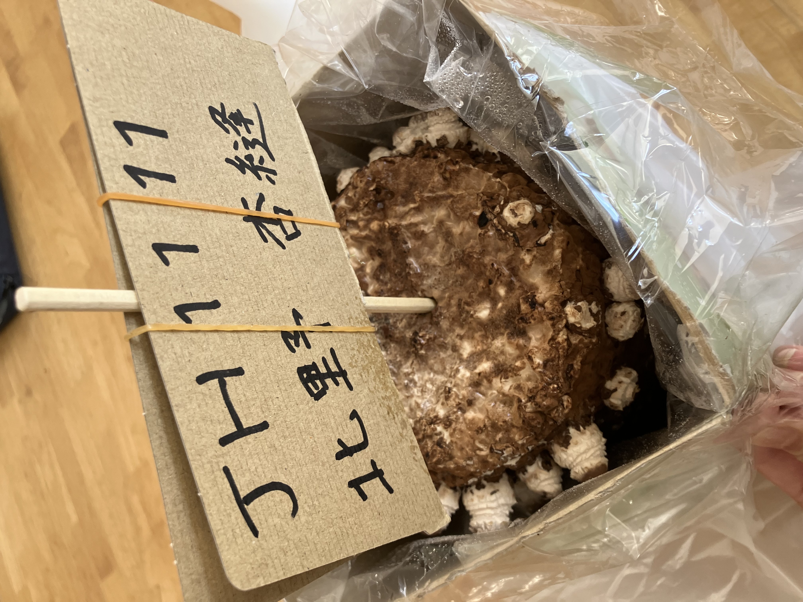

一年生しいたけ栽培記録！
美味しいしいたけの栽培方法！
１・栽培ブロックを袋から取り出す
２・水で洗う
３・ブロックを付属の栽培袋に入れ、栽培を開始する
４・水やりを一日１〜２回程度する
５・発芽から２〜５日で収穫可能になり、収穫する
一回目のしいたけ観察
この栽培ブロックに本当にしいたけができる？
二回目のしいたけ観察
  なんかしいたけらしいものが生えてきた！これからどのくらい育つのかな？
なんかしいたけらしいものが生えてきた！これからどのくらい育つのかな？
三回目のしいたけ観察
しいたけが生えてきた！意外と多くできていた。
収穫前
栽培ブロックが見えなくなるくらいにぎゅうぎゅうにしいたけが生えた。
収穫後
袋２個分もしいたけがあるとは思わなかった。
しいたけ収穫後の菌床
最初と同じような栽培ブロックになった。
しいたけを育ててみて
最初はうまくできるかわからなくて心配でした。だけど、意外と簡単で、最終的にうまく育てることができました。 私が思っているより早くしいたけが育ったので、びっくりしました。そして、料理して食べてみたらとても美味しかったです。
育てたしいたけで料理！
作った料理はしいたけと人参の中華スープです！
材料
・しいたけ
・にんじん
・卵
作り方
①卵をとく。
②しいたけを薄切りにする。
③にんじんを千切りにする。
④鍋に人参→塩→しょうゆ→ごま油→鶏ガラスープの素→水の順番でいれる。
⑤しいたけをいれ、中火で１分３０秒〜２分煮立たせる。
⑥水溶き片栗粉を入れて、とろみが付くまで煮る。
⑦卵を回しながらいれて、ゆっくりとまぜる。
✨️完成✨️
完成した料理！
作ってみた感想
材料も少なくて、作りやすかったです。しいたけもにんじんもきれいに切れたのが嬉しかったです。 でも、完成して食べてみると、味が薄くとろみがあまりついていなかったので、もうちょっと鶏ガラスープの素を入れたら良かったなとか 水溶き片栗粉をもうちょっとおおく入れたら良かったなという反省があった。 家族のみんなが作ったスープを食べて、美味しいなどと言ってくれて嬉しかったです。